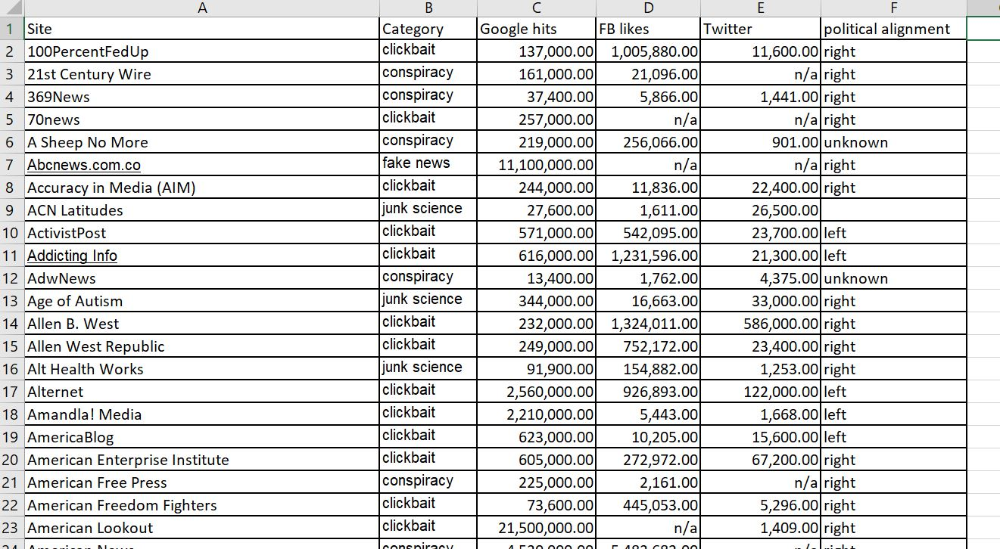
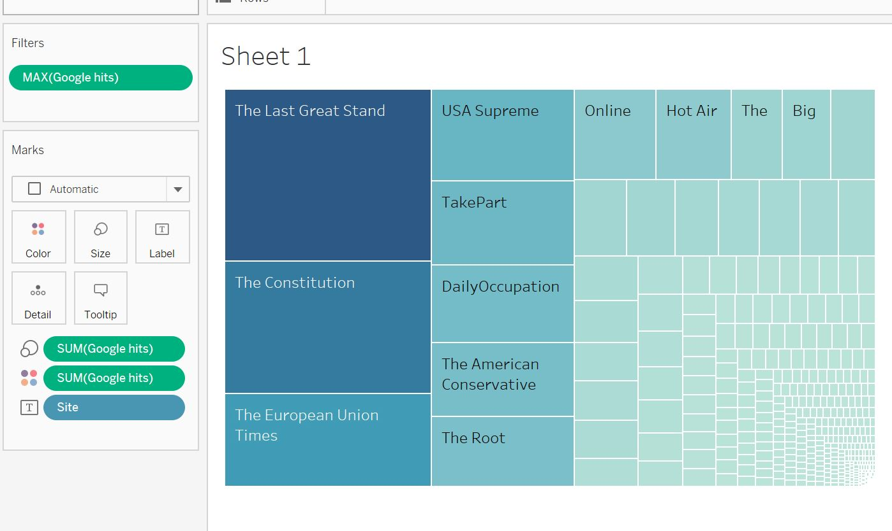
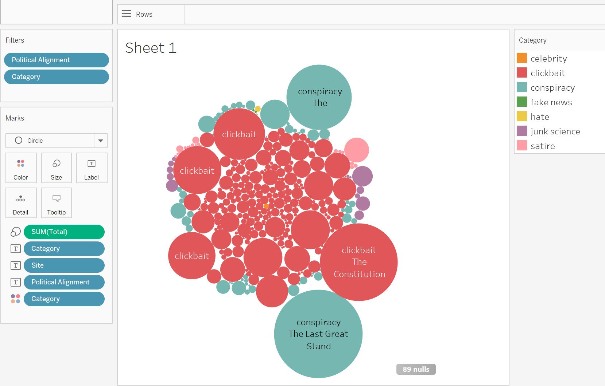
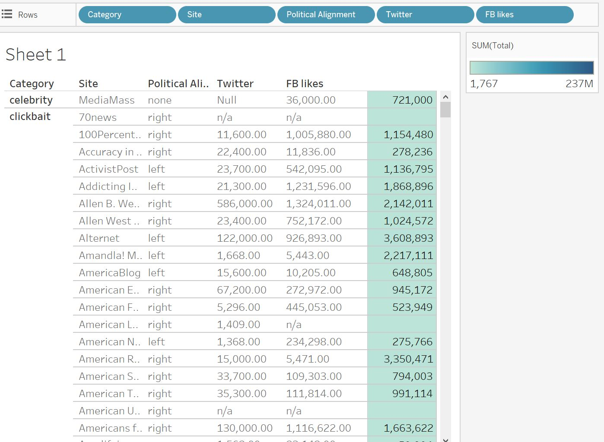

This dataset was generated by Md Main Uddin Rony, Naeemul Hassan, and Mohammad Yousuf and released at an International Conference on advances in Social Networks Analysis and Mining(ASONAM) in Sydney, Australia.
The date contains 25 most circulated print media, 43 most-watched broadcast media, and 85 conspiracy, satire and junk science based media organization. All data was accumulated from Facebook, Twitter, Google clicks and posts from January 1, 2014 to December 31, 2016.
Category:clickbait, conspiracy, junk science, hate, fake nes
Which site has the top google click, FB liker, Twitter, or total
How many sites located in different categories
The relationship between political alignment and category
Compare FB likes and Twitter character
